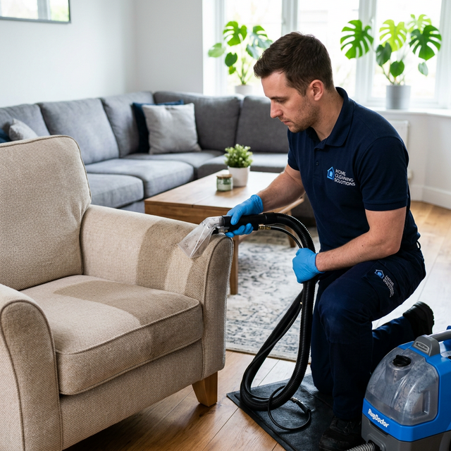
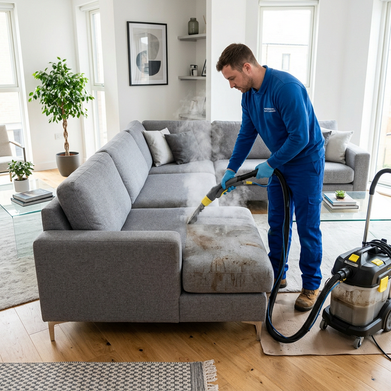
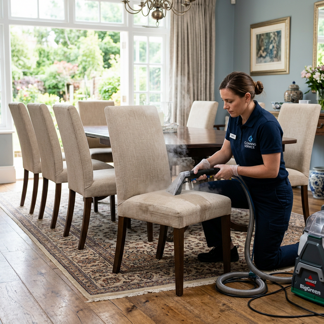
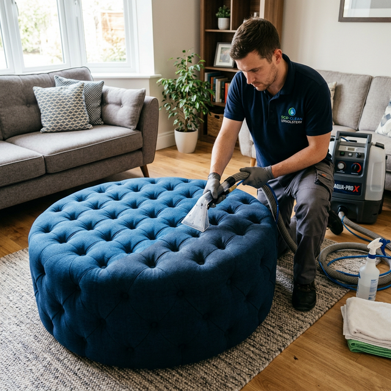

Professional Upholstery & Furniture Steam Cleaning in Melbourne
Your furniture is the centrepiece of every room — but daily use, spills, pet hair, and dust take their toll over time. At BABA Cleaning, we specialise in bringing your upholstered furniture back to life using the latest steam cleaning technology and eco-friendly products. From sofas and couches to dining chairs and ottomans, our expert cleaners handle every type of fabric and leather with care.
We use the Hot Water Extraction (HWE) method combined with professional-grade equipment to deeply penetrate fibres, extract embedded dirt, eliminate allergens, and remove stubborn stains — leaving your furniture looking, feeling, and smelling brand new.


Sofa Cleaning Melbourne
Your sofa is where you relax after a long day, host guests, and spend quality time with family. Over time, spills, body oils, pet dander, and dust mites accumulate deep within the fabric fibres, causing discolouration, odour, and potential health concerns. Our professional sofa cleaning Melbourne service tackles all of this head-on.
Using advanced steam extraction, we penetrate deep into your sofa's upholstery to lift and remove even the most stubborn stains — from wine and coffee spills to ink and grease marks. Our process is gentle on fabrics yet devastatingly effective against dirt, leaving your sofa fresh, sanitised, and restored to its original beauty.
- Deep stain removal including wine, coffee, ink & grease
- Allergen & dust mite elimination
- Fabric protection treatment available
- Both fabric and leather sofas catered for
Couch Cleaning Melbourne
From L-shaped sectionals to compact two-seaters, couches come in all shapes and sizes — and they all need regular professional cleaning. Our couch cleaning Melbourne service is tailored for every type of couch, including modular, recliner, and sleeper couches.
We begin with a thorough pre-inspection to identify fabric type, existing stains, and areas of concern. Our technicians then apply a pre-treatment solution to break down deeply embedded dirt before performing a hot water extraction clean. The result? A couch that looks and smells like the day you bought it — with no harsh chemical residue left behind.
- All couch types: sectional, modular, recliner & sleeper
- Pre-treatment for tough stains included free of charge
- Deodorising & sanitisation as standard
- Quick drying time — typically 2-4 hours


Chair Cleaning Melbourne
Dining chairs, armchairs, accent chairs, and office chairs all endure daily wear and tear. Food stains on dining chairs, body oil on armrests, and dust accumulation on decorative accent chairs can make your furniture look tired and uninviting. Our chair cleaning Melbourne service restores every chair in your home or office to pristine condition.
We carefully assess each chair's material — whether it's cotton, linen, velvet, microfibre, or leather — and select the appropriate cleaning method to deliver outstanding results without any risk of damage. For commercial clients, we offer bulk chair cleaning services ideal for restaurants, conference rooms, and waiting areas.
- Dining, arm, accent, and office chairs
- Material-specific cleaning: cotton, velvet, leather & more
- Bulk cleaning for restaurants & offices
- Stain guard protection available on request
Ottoman Cleaning Melbourne
Ottomans serve as footrests, extra seating, coffee tables, and storage — making them one of the most heavily used pieces of furniture in your home. Feet, shoes, spills, and pet paws all leave their mark. Our professional ottoman cleaning Melbourne service ensures your ottoman is hygienically clean and looking its best.
Whether your ottoman is tufted, flat-top, storage, or a sleeper ottoman, our technicians have the expertise to clean it thoroughly. We remove ground-in dirt, neutralise odours, and apply optional fabric protection to keep your ottoman looking fresh for longer. For storage ottomans, we also clean and sanitise the interior compartment.
- Tufted, flat-top, storage & sleeper ottomans
- Interior cleaning for storage ottomans
- Odour neutralisation & sanitisation
- Optional fabric protection coating

Why Choose BABA Cleaning for Your Furniture?
We're Melbourne's trusted choice for upholstery and furniture cleaning. Here's what makes us the best:
Advanced Steam Technology
We use the latest HWE steam cleaning equipment for deep, effective cleaning.
Eco-Friendly Products
Child and pet-safe cleaning solutions that are gentle on your furniture and the environment.
Licensed & Insured
Fully licensed and insured professionals for your complete peace of mind.
Combo Discounts
Save when you book multiple furniture items — sofas + chairs, couch + ottoman, and more.
Quick Drying Time
Our efficient process means your furniture is dry and ready to use within 2-4 hours.
Satisfaction Guaranteed
100% satisfaction guarantee on every cleaning job — we'll re-clean if you're not happy.
Frequently Asked Questions
What furniture do you clean?
We clean all types of upholstered furniture including sofas, couches, armchairs, dining chairs, accent chairs, office chairs, ottomans, footstools, and more. We handle both fabric and leather materials.
Will steam cleaning damage my furniture?
Not at all. Our technicians assess each piece individually and choose the appropriate temperature, pressure, and cleaning solution based on the material. We're experienced with delicate fabrics like silk and velvet as well as durable materials like microfibre and leather.
How long does the cleaning take?
A single sofa or couch typically takes 30-60 minutes. Dining chairs take about 10-15 minutes each. Most furniture is dry and ready to use within 2-4 hours after cleaning. We also offer express drying on request.
Do you offer discounts for multiple items?
Yes! We offer attractive combo deals when you book multiple furniture items together. For example, get a discount when you book sofa + armchair cleaning, or a full living room package. Contact us for a custom quote.
Do you handle commercial upholstery cleaning?
Absolutely! We provide upholstery cleaning for offices, restaurants, hotels, waiting rooms, and other commercial properties across Melbourne. Bulk pricing and after-hours cleaning are available.
Are your products safe for pets and children?
Yes. We use eco-friendly, non-toxic cleaning products that are completely safe for pets, children, and allergy sufferers. Our steam cleaning process actually helps remove allergens and dust mites from your furniture.
Get Your Furniture Looking Brand New Today!
Whether it's a single sofa or an entire house full of furniture, BABA Cleaning has you covered. Call us for a free quote and take advantage of our combo discounts. Your furniture deserves the best care in Melbourne.